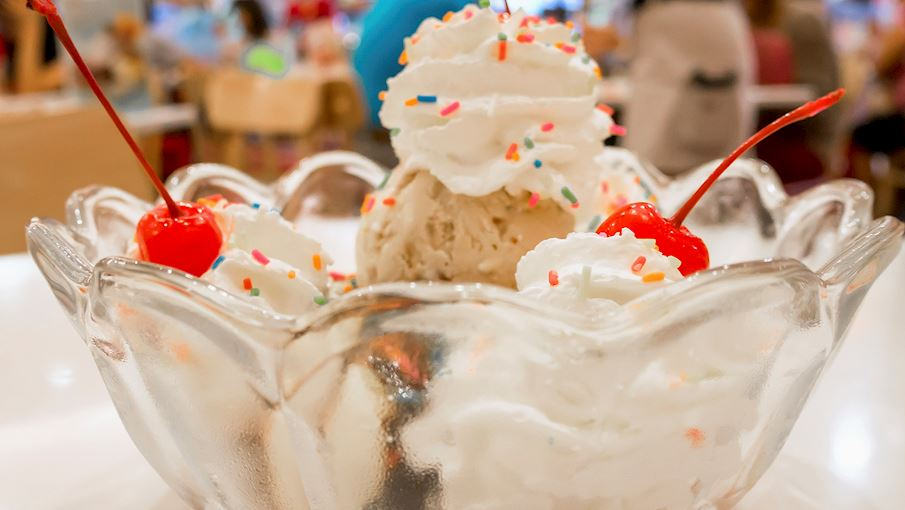

- In a small dish, pour melted white chocolate. In another small dish, pour rainbow sprinkles. Dip champagne glass rims in melted white chocolate, then in sprinkles.
- Add 1 to 2 scoops of sherbet to each champagne flute. Top with champagne and serve immediately.

Ingredients
Qty
Melted white chocolate rainbow sprinkles
1/4cup
Bottle of Champagne
750ml
rainbow sherbet
1